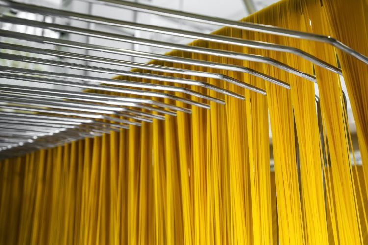

"Lavoro, ricerca e sperimentazione si traducono in un processo continuo di innovazione."
La produzione si sviluppa su ben 4 linee che ogni giorno impastano ed estrudono oltre 60 tonnellate di pasta in cento formati differenti. Arcigne procedure di controllo in ogni fase dei processi e l'automazione affiancata dalla continua sorveglianza dei nostri maestri pastai ci conducono alle più avanzate certificazioni di qualità.
Il Laboratorio di Ricerca è attrezzato per verificare la purezza e la ricchezza organolettica delle semole ancor prima dello stoccaggio nei sili da cui vengono inviate alle linee di produzione. Inizia qui l'alchemica operazione dell'impasto con acqua di sorgente, la modellazione attraverso le trafile, veri e propri oggetti di gioielleria meccanica. Infine la pasta appena formata raggiunge le linee di essiccazione.
Un prodotto composto da solo tre ingredienti di cui uno impalpabile - farina, acqua, aria - racchiudono nella semplicità minimale il segreto della loro magia: solo l'ossessione per la qualità può garantire l'eccellenza autentica del risultato finale. Sapori semplici che racchiudono l'infinito della natura, viatico indispensabile per la soddisfazione di chi se ne nutre.
La natura ci fornisce due elementi insostituibili e preziosi, l'acqua pura e l'aria limpida delle montagne. Da sempre avvertiamo l'urgenza di valorizzarle con materie prime scelte con quella conoscenza tecnica ed empirica che nel corso degli anni è diventata sapienza. Semole selezionate di grano duro, integrali e biologiche, oltre a Kamut Khorasan e farro sono valutate secondo i più rigorosi criteri di qualità, ma ancora prima sono scelti produttori che condividono il nostro sistema di valori.
La meticolosa lavorazione dei grani e la raffinata combinazione delle diverse varietà, affinata in cento anni e oltre, ci consente di ottenere nel prodotto finale quell'armonia tra caratteristiche tecnologiche di tenuta alla cottura, profumazione e gusto, quella piacevolezza al tatto e quell'agilità di condivisione dei piatti con i condimenti che lo rendono irresistibile per tutti gli amanti della pasta.
Lavoro, ricerca e sperimentazione si traducono in un processo continuo di innovazione, a favore di risposte costruttive per richieste di complessità crescente in Germania, Benelux, Gran Bretagna, Canada, Stati Uniti, Emirati Arabi, Corea, Giappone e Australia, oltre a più recenti acquisizioni in tutto il mondo.
Un percorso che nel corso degli anni ha qualificato il Pastificio Felicetti ai vertici del ristretto numero degli specialisti nell'export tra le realtà imprenditoriali di medie dimensioni, pur nell'ambito di uno scrupoloso rispetto dei valori tradizionali e dello spirito aziendale.
Oggi la pasta "speciale" vale i 2/3 del fatturato annuo del Pastificio.